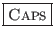
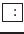
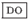

suivant: Démarrage d'une session "vi"
monter: Commandes de base de
précédent: Introduction et conventions
Table des matières
Index
Modes de fonctionnement de "vi"
"vi" distingue deux modes de fonctionnements :
- le mode "commande"
-
Ce mode correspond lorsque vous n'êtes pas en train de saisir du texte.
Pour cela, chaque touche du clavier alphanumérique correspond à une
fonctionnalité de l'éditeur de texte. Vous pouvez déplacer le curseur,
rechercher du texte, sauvegarder le buffer courrant, appeler le
prompt de "vi" afin de saisir des commandes
internes de l'éditeur. Comme tout utilitaire UNIX,
"vi" fait la différence entre les majuscules et les minuscules.
Par conséquent, vous devez prendre garde que la touche

ou "Verrouillage en majuscule" ne soit pas en fonction. Dans
ce cas, le comportement que pourrait avoir "vi" risque de
vous surprendre et surtout ne pas faire ce que vous souhaité (mais
par contre ce qui a été demandé !).
- le mode "insertion"
-
Ce mode correspond lorsque vous êtes en train de saisir ou de modifier
du texte. Vous pouvez insérer autant de lignes que vous voulez, par contre,
vous ne pouvez modifier le texte que de la ligne courrant.
Pour quitter le mode "insertion", il vous suffit d'appuyer
sur la touche
 .
.
À la section ![[*]](crossref.png) , nous avons parlé de commandes
"vi" commençant par le caractère ":" et validée par
, nous avons parlé de commandes
"vi" commençant par le caractère ":" et validée par
 . Ce mode de fonctionnement correspond au "prompt"
de "vi", invite à partir de laquelle il est possible de saisir
des commandes internes à "vi". Ce mode est accessible à partir
du mode "commande". Les différences entre ces deux comportements
sont les suivantes :
. Ce mode de fonctionnement correspond au "prompt"
de "vi", invite à partir de laquelle il est possible de saisir
des commandes internes à "vi". Ce mode est accessible à partir
du mode "commande". Les différences entre ces deux comportements
sont les suivantes :
- En mode commande, toutes les touches du clavier
alphanumérique ont une fonction particulière, par exemple
pour déplacer le curseur, effacer des caractères ou des lignes,
sélectionner du texte, etc. Ce mode serait l'équivalent, sous
les éditeurs de texte de OpenVMS, d'accéder à toutes les
fonctionnalités des touches du pavé numérique sur des claviers
LK200, LK400. En effet, pour ces éditeurs, chaque touche
correspond à une fonctionnalité donnée. Sous "vi",
le clavier numérique est censé permettre d'afficher des nombres
ou d'utiliser les flèches (sur des claviers de type PC). Il a
donc fallu trouver une méthode pour associer des raccourcis
clavier à un certain nombre de fonctionnalité. L'une d'entre
elle est d'accéder au "prompt" de "vi"
afin de saisir des commandes internes à l'éditeur.
- À l'invite de "vi", il est possible de saisir
un certain nombre de commandes explicitées dans toute la suite.
Ces commandes servent à définir l'environnement de travail,
exécuter des actions, etc. Pour y accéder, il suffit d'appuyer
sur la touche  à partir du mode commande. Ce mode de
fonctionnement est équivalent à celui des éditeurs de texte
sous OpenVMS une fois que la touche
 est
pressée.
Dans tout ce qui suit, les commandes explicitées sont valables en
mode "commande" à moins que celui-ci ne soit précisé. Toutes
les commandes précédées par le caractère «:" sont accessibles
à partir du "prompt" de "vi". Pour appeler le
prompt, il suffit de :
- être en mode "commande",
- appuyer sur la touche .
suivant: Démarrage d'une session "vi"
monter: Commandes de base de
précédent: Introduction et conventions
Table des matières
Index
baudry@esme.fr